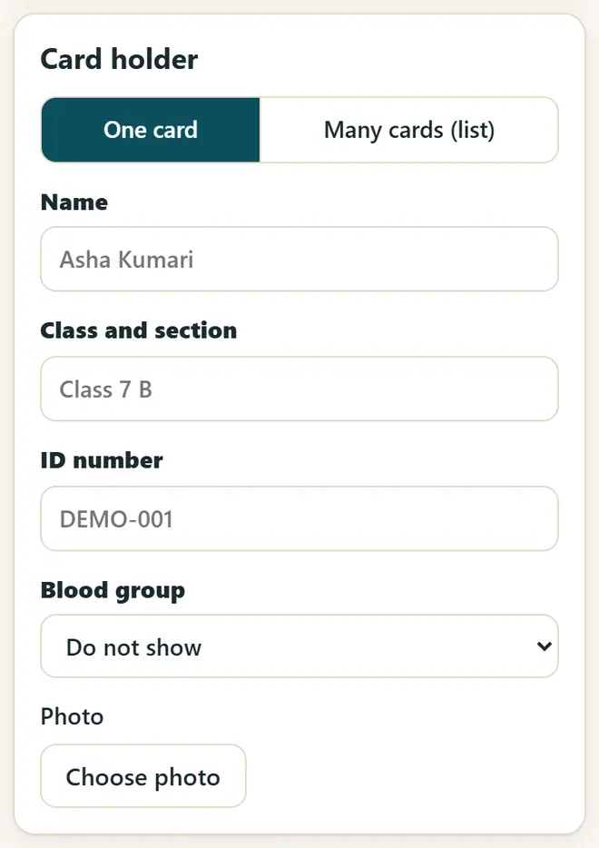

विद्यार्थी ID कार्ड मेकर: ID कार्ड मोफत बनवा आणि A4 वर प्रिंट करा
छोटी शाळा, कोचिंग क्लास किंवा एखाद्या कार्यक्रमासाठी ID कार्ड बनवायला डिझाइन सॉफ्टवेअरची गरज नाही. हे मोफत ॲप तुम्ही लिहिलेल्या माहितीवरून कार्ड बनवते, आणि मुलांचे फोटो तुमच्या डिव्हाइसबाहेर जात नाहीत.
थोडक्यात उत्तर
ID कार्ड मेकर उघडा, “विद्यार्थी” निवडा आणि शाळेचे नाव व विद्यार्थ्याची माहिती लिहा. फोटो लावण्यासाठी “फोटो निवडा” दाबा. पूर्ण वर्गासाठी “अनेक कार्डे (यादी)” निवडा आणि यादी पेस्ट करा. मग “A4 वर छापा” दाबा: प्रत्येक कार्ड 54 × 86 mm चे आहे, आणि एका A4 शीटवर 9 उभी किंवा 10 आडवी कार्ड बसतात.
5 पायऱ्यांत विद्यार्थी ID कार्ड
-
कार्डचा प्रकार निवडा आणि शाळेची माहिती भरा
ID कार्ड मेकर उघडा. ते नमुना माहितीसह उघडते. “विद्यार्थी” निवडा (“कर्मचारी” आणि “पाहुणे” हेही आहेत). शाळेचे नाव, पत्ता, संपर्क क्रमांक आणि कार्ड कधीपर्यंत वैध आहे ते लिहा. लोगो असेल तर “लोगो निवडा” दाबा.
-
विद्यार्थ्याची माहिती आणि फोटो जोडा
“एक कार्ड” निवडलेले ठेवा आणि नाव, इयत्ता व तुकडी आणि ID क्रमांक लिहा. रक्तगट कार्डवर हवा असेल तर तो निवडा. “फोटो निवडा” दाबा, चेहऱ्याचा स्पष्ट फोटो निवडा आणि चेहरा चौकटीच्या मध्यभागी येईपर्यंत स्लायडर हलवा.

विद्यार्थ्याची माहिती लिहा आणि फोटो जोडा. -
पूर्ण वर्गाची कार्ड बनवा
“अनेक कार्डे (यादी)” निवडा आणि प्रत्येक ओळीत एक विद्यार्थी लिहा किंवा पेस्ट करा: नाव, इयत्ता, ID क्रमांक, रक्तगट, कधीपर्यंत वैध, संपर्क, पत्ता. फक्त नाव आवश्यक आहे, आणि Excel मधूनही पेस्ट करता येते. “नमुना CSV डाउनलोड करा” मधून मांडणी समजते. फोटो फाइलना ID क्रमांक किंवा नावाप्रमाणे नाव द्या आणि “फोटो जोडा” ने सगळे एकत्र जोडा.
-
डिझाइन निवडा
“उभे” किंवा “आडवे” आणि एक रंग निवडा. ID क्रमांक असलेला QR कोड हवा असेल तर “ID क्रमांकाचा QR कोड जोडा” वर खूण करा.
-
A4 वर प्रिंट करा किंवा डाउनलोड करा
“A4 वर छापा” दाबा. प्रिंट विंडोमध्ये A4 कागद आणि 100% स्केल निवडा, मग छोट्या खुणांवर कापा. “PNG डाउनलोड करा” ने कार्ड चित्र म्हणून सेव्ह होते.

QR कोड असलेले तयार विद्यार्थी ID कार्ड.
ID कार्ड छापण्यासाठी टिप्स
- जाड A4 कागदावर छापा. मग कार्ड लॅमिनेट करा किंवा कार्ड होल्डरमध्ये ठेवा.
- अजून फोटो नाही? कार्डवर साधारण 20 × 25 mm ची रिकामी चौकट येते, तिथे स्टॅम्प साइज फोटो चिकटवता येतो.
- एका यादीत 300 पर्यंत कार्ड बनतात. मोठ्या शाळेसाठी प्रत्येक वर्गाची वेगळी यादी बनवा.
- पूर्ण शीट छापण्याआधी स्क्रीनवर स्पेलिंग, ID क्रमांक आणि संपर्क क्रमांक तपासा. एखादा ID क्रमांक दोनदा आला तर ॲप सांगते.
नवे मोफत टूल्स आणि हिंदीत AI चे धडे मिळवा
आमच्या ईमेल लिस्टमध्ये सामील व्हा: नवीन मोफत ॲप्स, नवीन मार्गदर्शिका आणि AI वरील हिंदी व्हिडिओ धड्यांची माहिती मिळत राहील. स्पॅम नाही.
फक्त प्रौढांसाठी (18+). तुम्ही कधीही नाव काढून घेऊ शकता.
आम्ही हे टूल्स का सुचवतो
- सर्वांसाठी मोफत: जाहिराती नाहीत, साइन-अप नाही, पेड प्लॅन नाही.
- खाजगी: तुमच्या फाइल्स आणि माहिती तुमच्याच डिव्हाइसवर राहते.
- फोन, लॅपटॉप किंवा स्मार्टबोर्डवर चालतात, आणि एकदा उघडल्यावर इंटरनेटशिवायही.
- मराठी आणि हिंदीसह 12 भाषांमध्ये.
व्हिडिओतून शिकायला आवडतं? आमच्या YouTube चॅनेलवर AI आणि मोफत टूल्सचे हिंदी धडे पाहा.
वारंवार विचारले जाणारे प्रश्न
ID कार्डचा आकार किती असतो?
प्रत्येक कार्ड 54 × 86 mm चे आहे, साधारण बँक कार्डएवढे, म्हणून ते नेहमीच्या कार्ड होल्डरमध्ये बसते. हाच आकार राहण्यासाठी 100% स्केलवर छापा.
एका A4 पानावर किती ID कार्ड बसतात?
9 उभी कार्ड किंवा 10 आडवी कार्ड. तुमच्या यादीला किती पाने लागतील हे ॲप दाखवते.
सर्व विद्यार्थ्यांची ID कार्ड एकाच वेळी बनवता येतात का?
हो. “अनेक कार्डे (यादी)” निवडा आणि यादी पेस्ट करा, किंवा “CSV फाइल उघडा” ने CSV फाइल उघडा. सगळे फोटो एकत्र जोडा: ते ID क्रमांक किंवा नावावरून आपोआप जुळतात.
विद्यार्थ्यांचे फोटो अपलोड होतात का?
नाही. फोटो आणि माहिती तुमच्या डिव्हाइसवरच राहते; काहीही अपलोड होत नाही. कार्ड तुमच्याच ब्राउझरमध्ये बनतात.
हे सरकारी ओळखपत्र आहे का?
हे तुमच्या स्वतःच्या शाळेचे, क्लासचे, ऑफिसचे किंवा कार्यक्रमाचे ओळखपत्र आहे. हे सरकारी ID नाही, आणि ते फक्त शाळेने किंवा आयोजकानेच बनवावे.
उपयोगी वाटली?
मित्राला, सहकाऱ्यांना किंवा तुमच्या शाळेच्या WhatsApp ग्रुपमध्ये पाठवा.